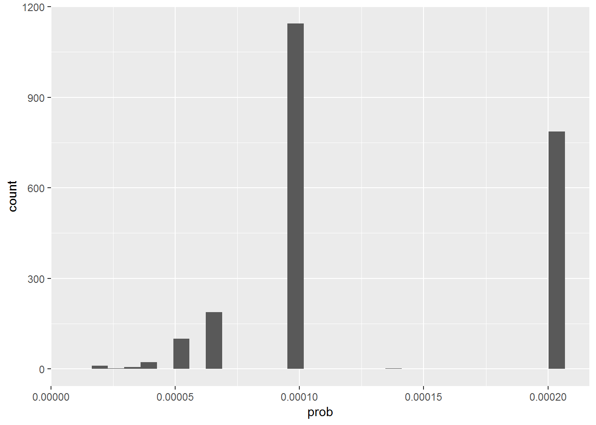

3 Step 1: Design weights
The first step in weighing is taking into account the different probabilities of being sampled that respondents may have. The 7th ESS did not use a register of people in the UK (in other countries they did). They first selected postcode sectors from the Post Office’s small user postcode address file (PAF) merging smaller sectors. The probability of each PAF of being selected was proportional to the number of addresses it contained. Then, they selected 20 addresses inside of each sampled PAF and a dwelling for each address. For each dewlling they selected a household and then a person in each household. The full explanation of the sampling procedure is given in page 163 of The data documentation report (Edition 3.1).
This sampling design is typical of survey frames where there is an available/public list of addresses but not a list of households or individuals. If we don’t weight this survey, we would probably over-represent people in addresses that have smaller number of dwellings, dwellings that include smaller number of households and households that comprise smaller number of people (we will actually see this below).
Fortunately for us, the probablity of each respondent of being sampled was computed by national experts and included in the 7th ESS dataset. In many projects, however, we would have to compute sampling probailities ourselves1. A basic but important test that should be performed after computing the probabilities is making sure that all probabilities are between 0 and 1.
We will perform this test in the next chunk of code, which should give us an error if any of the probabilities is not in the interval \([0,1]\).
probabilities <- data %>%
summarise(min.probability = min(prob, na.rm = T),
max.probability = max(prob, na.rm = T)) %>%
as.vector()
print(probabilities)## min.probability max.probability
## 1 0.00001269135 0.0002030616if(probabilities$min.probability < 0){stop("Minimum probability of being sampled is smaller than 0. Review sampling probabilities before computing base weights.")}else if(probabilities$max.probability > 1){stop("Maximum probability of being sampled is larger than 1. Review sampling probabilities before computing base weights.")}
rm(probabilities)We see that there are actually 16 unique sampling probabilities computed in the dataset.
unique(sort(data$prob))## [1] 0.00001269135 0.00001682761 0.00001692180 0.00001846015 0.00002030616
## [6] 0.00002256240 0.00002538271 0.00002900881 0.00003384361 0.00004061233
## [11] 0.00005076541 0.00006768721 0.00010153082 0.00013681033 0.00020306164The vast majority of respondents had probability of 0.0001015 or 0.00020306 (i.e. one in 9849 and one in 4925). We see a minority of around 15% of observations with smaller probabilities. These probabilities might seem very small. This is because the whole population is very large and the survey only sampled a small part of it.
table(round(data$prob*100,6))##
## 0.001269 0.001683 0.001692 0.001846 0.002031 0.002256 0.002538 0.002901
## 1 1 1 2 1 6 1 1
## 0.003384 0.004061 0.005077 0.006769 0.010153 0.013681 0.020306
## 6 22 101 188 1144 2 787ggplot(data, aes(x = prob)) +
geom_histogram()
The sampling probability of respondents seems to be related to the type of dwelling of respondents and the number of people in their household. We would have expected this as some types of dwellings might tend to be linked to a single address. For other (smaller) types there might usually be many dwellings sharing the same address2. Something similar would happen for size of household. Individuals in large households would have smaller probabilities of being sampled than individuals who are the only person in the household.
These differences in sampling probabilities across dweling type and household size show that, without any kind of adjustment, our sample would over-represent people living in certain types of dweling (e.g. ‘Multi-unit house, flat’) and people living in small households. If respondents from living in different types of dwellings and household sizes had differences in our ‘Y’ variables (e.g. smoked more or drank more alcohol) then our estimates from the survey sample would be biased.
data %>%
filter(!is.na(prob)) %>%
group_by(type) %>%
summarise(n = n(),
mean.prob.percentage = mean(prob, na.rm = T)*100) %>%
arrange(desc(mean.prob.percentage))## # A tibble: 11 x 3
## type n mean.prob.percentage
## <fctr> <int> <dbl>
## 1 NA 1 0.02030616
## 2 Multi-unit: Sheltered/retirement housing 21 0.01869456
## 3 Multi-unit house, flat 346 0.01617988
## 4 Other 15 0.01601931
## 5 House-trailer or boat 3 0.01353744
## 6 Single unit: Terraced house 591 0.01338198
## 7 Only housing unit in building with other purpose 7 0.01305396
## 8 Single unit: Semi-detached house 670 0.01213712
## 9 Single unit: Detached house 582 0.01173768
## 10 Farm 24 0.01149272
## 11 Multi-unit: Student apartments, rooms 4 0.00412469data %<>%
mutate(hhmmb.factor = as.factor(hhmmb) %>% fct_recode(`+5` = "6",
`+5` = "7",
`+5` = "8"))
data %>%
filter(!is.na(prob)) %>%
filter(!is.na(hhmmb.factor)) %>%
group_by(hhmmb.factor) %>%
summarise(n = n(),
mean.prob.percentage = mean(prob, na.rm = T)*100) %>%
arrange(desc(mean.prob.percentage))## # A tibble: 6 x 3
## hhmmb.factor n mean.prob.percentage
## <fctr> <int> <dbl>
## 1 1 745 0.019260215
## 2 2 764 0.010841915
## 3 3 301 0.009803027
## 4 4 303 0.009026823
## 5 5 118 0.008328013
## 6 +5 33 0.007486616To solve these differences in sampling probabilities we have to compute design weights (sometimes also called base weights. The design weights are equal to the inverse of the probability of inclusion to the sample. Therefore, the design weight (d0) of a respondent (i) will be equal to: \(d_{0i} = 1/\pi_{i}\) where \(pi_{i}\) is the probability of that unit of being included in the sampling.
Here we compute the design weight from the probability given in the ESS database.
data %<>%
mutate(base.weight = 1/prob)
data %>%
select(prob, base.weight) %>% head(10)## prob base.weight
## 1 0.00020306164 4924.613
## 2 0.00020306164 4924.613
## 3 0.00020306164 4924.613
## 4 0.00005076541 19698.452
## 5 0.00010153082 9849.226
## 6 0.00010153082 9849.226
## 7 0.00010153082 9849.226
## 8 0.00020306164 4924.613
## 9 0.00010153082 9849.226
## 10 0.00010153082 9849.226A simple interpretation of design weights it ‘the number of units in our population that each unit in our sample represents’. There is a simple but important test that we should perform after computing design weights. The sum of all design weights should be equal to the total number of units in our population. The ESS dataset for UK only included sampling probabilities for respondents (i.e. sampled units that responded to the survey!) but they did not include sampling probabilities of non-respondents. We can guess that this is because sampling probability depends on information that is obtained from the interview (i.e. number of people in household, number of households in dwelling, number of dwellings in adress, etc.). Not knowing the sampling probability for some sampled units is not an optimal situation.
The sum of our computed weights in the ESS dataset with 2,265 respondents equals 21,338,524. Doing a very simple Extrapolation to include the 3,335 non-respondents would give us a sum of weights equal to 52,757,499. This last figure would be much closer to the total UK population over 15.
It is a common practice for many researchers to scale the weights so that their sum equals the sample size (instead of the population size). Scaled weights would equally adjust for differences in sampling probabilities.
Here we compute our scaled design weights and we compare them with the ones given in the ESS dataset. We see that our weights scaled (base.weigth.scaled) are almost equal to those computed in the ESS dataset (dweigth). The small differences are probably due to rounding error.
data %>%
filter(!is.na(base.weight)) %>%
select(idno, base.weight) %>%
mutate(base.weight.scaled = base.weight/sum(base.weight, na.rm = T)*nrow(data[!is.na(data$prob),])) %>%
left_join(original.weights %>% select(idno, dweight),
by = "idno") %>% head(10)## idno base.weight base.weight.scaled dweight
## 1 100000003 4924.613 0.5224974 0.526796
## 2 100000005 4924.613 0.5224974 0.526796
## 3 100000008 4924.613 0.5224974 0.526796
## 4 100000009 19698.452 2.0899897 2.107184
## 5 100000010 9849.226 1.0449949 1.053592
## 6 100000012 9849.226 1.0449949 1.053592
## 7 100000015 9849.226 1.0449949 1.053592
## 8 100000016 4924.613 0.5224974 0.526796
## 9 100000017 9849.226 1.0449949 1.053592
## 10 100000020 9849.226 1.0449949 1.053592data %<>%
mutate(base.weight.scaled = base.weight/sum(base.weight, na.rm = T)*nrow(data[!is.na(data$prob),]))As we mentioned before, design weights should sum up to the entire population from which the sample is drawn or to the total number of respondents if scaled as they did in the ESS. In this example both sums should equal 2,265.
data %>%
left_join(original.weights %>% select(idno, dweight),
by = "idno") %>%
summarise(sum.all.base.weights.scaled = sum(base.weight.scaled, na.rm = T) %>% round(0),
sum.all.design.weights.ess = sum(dweight, na.rm = T) %>% round(0))## sum.all.base.weights.scaled sum.all.design.weights.ess
## 1 2264 2264In ‘real’ projects where we do the sampling ourselves we would have the sampling probability of both respondents and non-respondents. This example shows us that it is enough to know the probablity of inclsion of respondents.↩
As we explained before, this is relevant because sampling allocation inside Primary Sampling Units (postcode sectors) was proportional to the number of adresses in each of these. Therefore, if an address contains a large number of dwellings, each dwelling will have a smaller probability of being sampled than a dwelling that is the only one in an address.↩